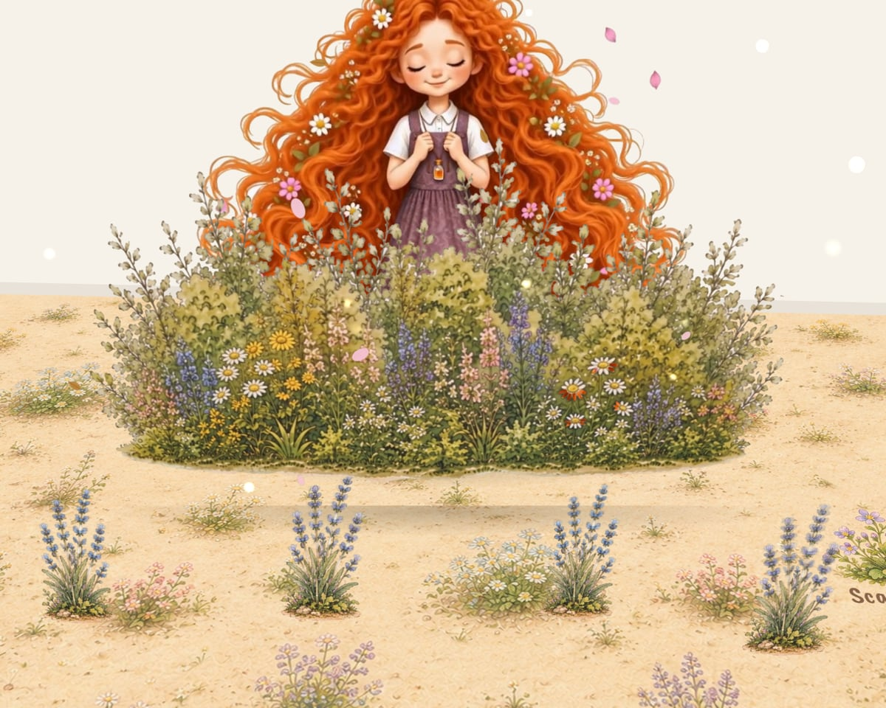

Scene 1
Scene 1
Memories
Three icons, three seasons: summer shadow games on the wall, the swing in the autumn rain, and snow angels side by side, each arriving with a magical spin.
 SunflowerSummer
SunflowerSummer UmbrellasAutumn
UmbrellasAutumn SnowmanWinter
SnowmanWinter
An augmented-reality pop-up book
A pop-up book about loss, love and remembering. Point your phone at a Scan Here icon and the memories step out of the paper: seasons turn, a window opens, seeds are planted, and a garden grows.
Works in Safari (iPhone) and Chrome (Android). No app to install.

How it works
Lay the page flat in good light. Every scene has one or more Scan Here icons printed on it.
Press Scan the Book, allow the camera, and fill the frame with an icon until it locks on.
Step back and look at the page at an angle: the memory comes alive right where it belongs.
The scenes
Try each one here with Preview, or open it in AR and scan the page.
Scene 1
Three icons, three seasons: summer shadow games on the wall, the swing in the autumn rain, and snow angels side by side, each arriving with a magical spin.
SunflowerSummerUmbrellasAutumnSnowmanWinter Scene 7
Scene 7
The window opens and the wind blows the drawings off the desk. A paper plane lands on the bunny, and Diana sits down to hug and play with it.
 BunnyScan Me
BunnyScan Me Scene 8
Scene 8
Diana appears in three places and plants a seed each time, among flower petals, autumn leaves and snow. Each seed answers with a soft light and a sprout.
 Seed holeScan Here
Seed holeScan Here Scene 9
Scene 9
A calm ending: wind in her hair and in the bush, and a paper plane crossing the page, waking blue and violet flowers that grow along its path.
 Flower bushScan Here
Flower bushScan HereAbout the project
Written, illustrated and developed by
Farnaz Attar
A practical project developed for the Master’s thesis
Interactive Narratives for Emotional Learning: Developing an AR Pop-Up Book Framework for Explaining Death to Children